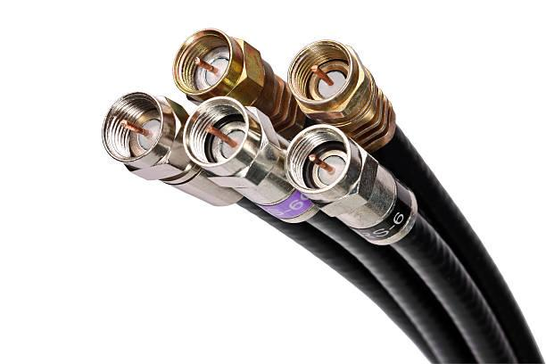
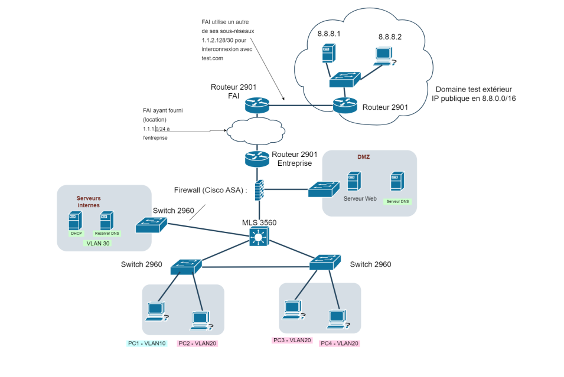
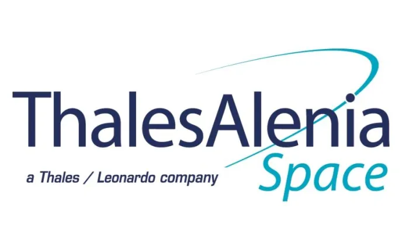
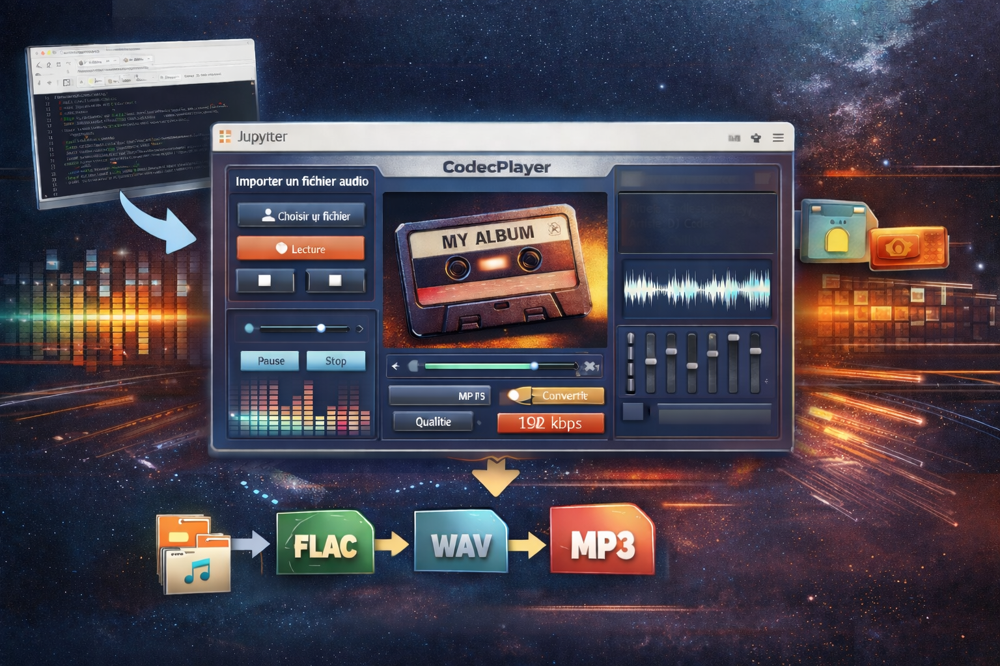
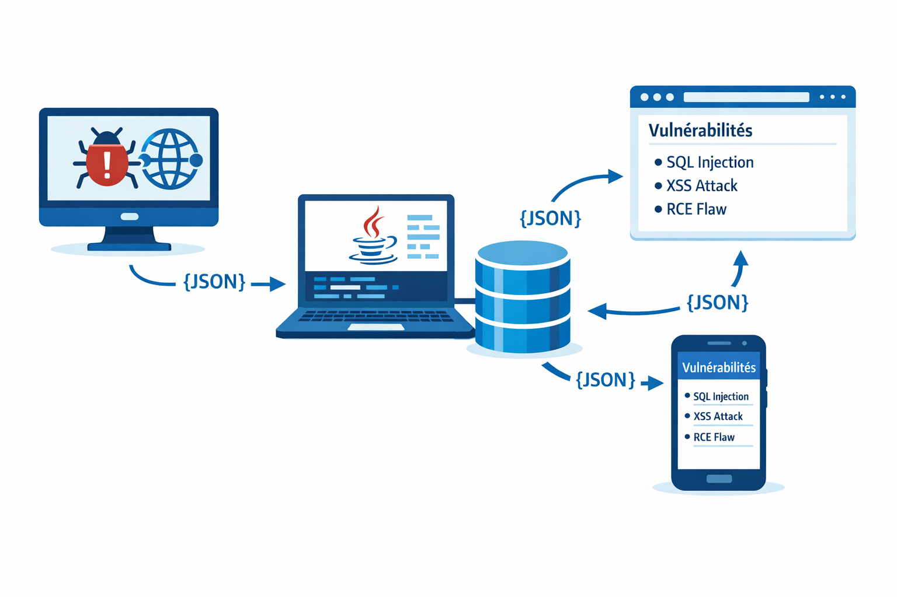
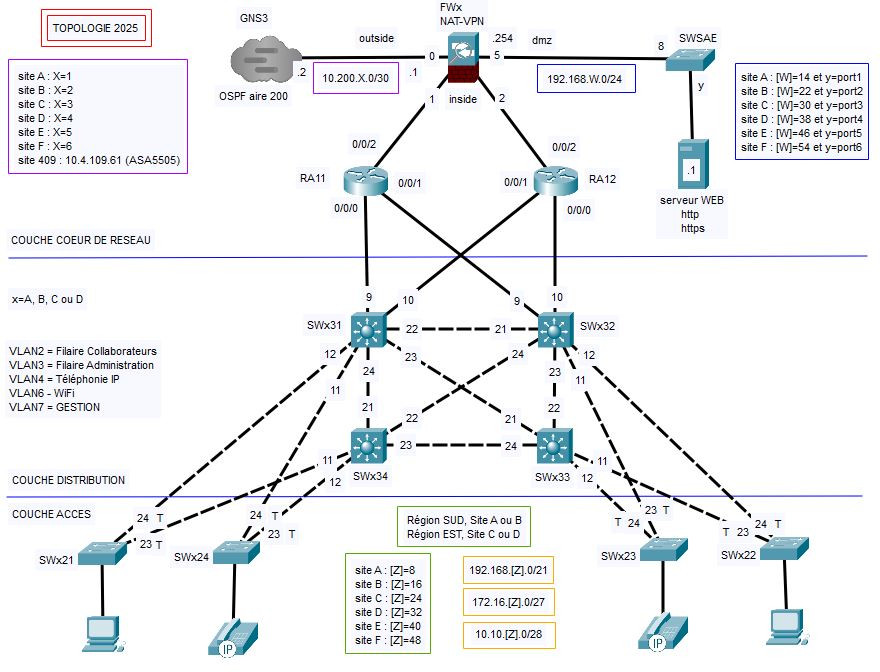

Télécharger mon CV
Accueil
Profil
Projets
Compétences
Expérience
Mes Projets
Afficher :
Tous
S1
S2
S3
Hygiène info et à la cybersécurité
S'initier aux réseaux informatiques

Découverte d’un dispositif de transmission
E‑Réputation

Réseau d'entreprise
Site Web

Projet Système Prise Photos Banc Avionique

Système de Transmission Audio

Applications Communicantes

Réseau Informatique Sécurisé Multisite
✕
‹
›